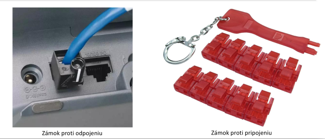
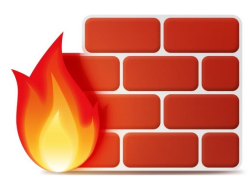
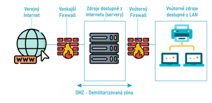
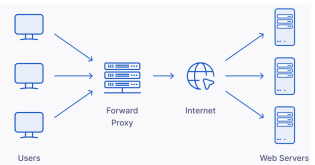
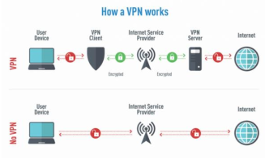
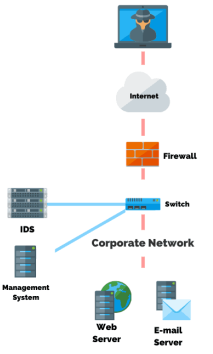
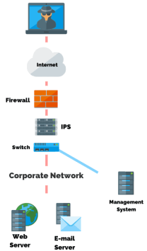
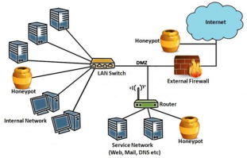

Ochranné opatrenia pred útokmi na počítačové siete
Typy útokov
- Denial of Service (DoS) – tento typ útokov spočíva v zamedzení využívania bežných sieťových služieb (DHCP, DNS, HTTP...) alebo iných IT služieb (autentifikácia, databázy, ...) ich odstavením alebo extrémnym spomalením.
- Distributed DoS (DDoS) – špeciálny typ DoS útoku, ktorý prebieha z viacerých miest na planéte naraz.
- Man in the Middle (MITM) – útok spočíva v odpočúvaní sieťovej prevádzky a následnom zisťovaní jej obsahu za účelom ukradnutia informácií.
Bezpečnosť na fyzickej vrstve
- V prípade slabšie zabezpečených sieťových zariadení je možné po pripojení k zásuvke RJ-45 alebo k switchu získať prístup do siete.
- Cez konzolový port je tiež možné získať prístup k zariadeniu, reštartovať ho a získať z neho konfiguráciu.
- Na fyzickú ochranu zariadení sa používajú uzamykateľné racky alebo špeciálne zámky do RJ45 konektorov.
Port blocker
- Port blocker je fyzická ochrana sieťových portov.
- Slúži ako zámok proti odpojeniu alebo proti pripojeniu neoprávneného zariadenia.

Firewall
- Firewall môže byť špeciálny hardvér (NBF) alebo program (HBF), ktorého úlohou je filtrovať sieťovú prevádzku medzi sieťami alebo počítačmi v sieti.
- Funguje na základe pravidiel na L3 a L4, pričom v pravidlách sa definuje zdrojová a cieľová IP, zdrojový a cieľový L4 port, prípadne stav spojenia.

Existujú 2 typy firewallov:
- Stateless – každý paket alebo segment je filtrovaný na základe zadaných pravidiel.
- Stateful – testovaných je len prvých pár paketov alebo segmentov a ďalšia komunikácia sa riadi podľa toho, ako boli vyhodnotené prvé pakety alebo segmenty v spojení.
DMZ
- DMZ – demilitarizovaná zóna je miesto v sieti (podsieť) obsahujúce zariadenia, ktoré majú byť dostupné z internetu, napríklad web server, mail server, VPN brána alebo VOIP brána.
- Väčšinou sa umiestňuje medzi 2 firewally.
- Vonkajší firewall kontroluje prevádzku medzi internetom a DMZ.
- Vnútorný firewall kontroluje prevádzku medzi DMZ a vnútornou sieťou LAN.

Proxy
- Proxy (angl. splnomocnenec) je špeciálny server v sieti, cez ktorý prechádza všetka sieťová prevádzka.
- Ak má počítač nastavený proxy server, neodosiela všetku sieťovú prevádzku priamo na cieľovú IP, ale na proxy server.
- Proxy server kontroluje prevádzku až na L7 a môže filtrovať rôzne dotazy aj na základe kľúčových slov.
- Zároveň slúži ako cache pre statický webový obsah, napríklad obrázky alebo CSS.

VPN
- VPN funguje veľmi podobne ako proxy server, avšak úlohou VPN je zároveň šifrovať prevádzku.
- Používateľ VPN má na svojom zariadení nainštalovaný softvér, ktorý sa správa ako VPN klient, pričom tento softvér šifruje všetok dátový tok a odosiela ho na VPN server.
- VPN server dešifruje dátový tok a posiela ho ďalej do cieľa, ktorý pošle odpoveď späť na VPN server a ten ju doručí šifrovaným prenosom späť cez klienta používateľovi.

IDS
Systém na detekciu prienikov
- IDS je zariadenie (NIDS) alebo softvér (HIDS), ktorý umožní analyzovať všetku dátovú prevádzku a detegovať v nej podozrivé vzorce správania.
- Vyhodnocovanie prebieha na základe signatúr, teda popísaných vzorcov priebehu útoku, alebo na základe narušenia bežnej prevádzky.
- Po detekcii prieniku upozorní administrátorov, aby proti prieniku včas zasiahli a zabránili škodám.

IPS
Systém na prevenciu prienikov
- IPS je zariadenie (NIPS) alebo softvér (HIPS), ktorý na základe detekcie možného prieniku vykoná sám protiopatrenia, ktoré prieniku zabránia.
- Tým, že IPS je umiestnený v ceste dát, môže spomaľovať dátový tok, navyše je drahší.
- Samotná prevencia môže spočívať v ukončení prenosu, odstránení súboru, aktualizácii pravidiel firewallu alebo úprave prístupových práv aplikácie.

Honeypot
- Honeypot sám o sebe neslúži ako bezpečnostný prvok, ktorý by detegoval alebo zabraňoval nekalej aktivite na sieti.
- Jeho úlohou je tváriť sa nevinne a nezabezpečene a nalákať tak útočníkov na to, aby naň realizovali svoje útoky.
- Na honeypote beží analytický softvér, ktorý sleduje priebehy útokov a z jeho naučených dát je potom možné vytvárať pravidlá pre ďalšie bezpečnostné prvky v sieti, napríklad firewall, proxy, IDS alebo IPS.
